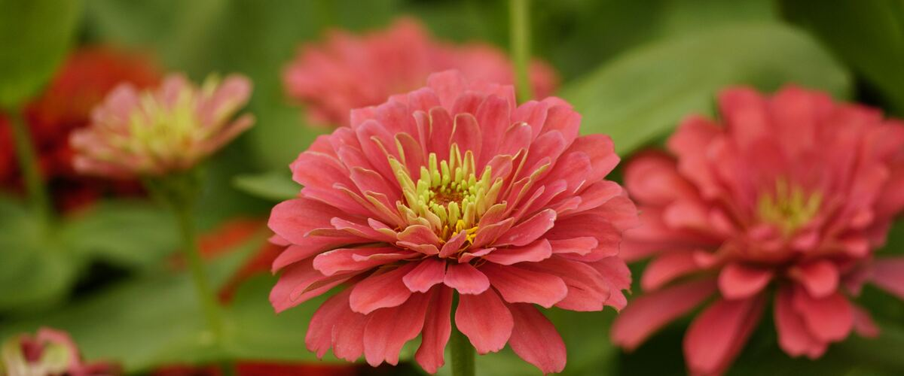

Oregon · Washington · Idaho
When to plant zinnias
Plant in the garden: Portland and Seattle May 10 – Jun 21; Spokane May 15 – Jun 26; Boise May 1 – Jun 12; Bend Jun 16 – Jul 28.
Your dates in
Zinnias are bright annual flowers from Mexico in the daisy family, grown for cut flowers and to feed butterflies. Heights run from 6-inch edging types to 4-foot varieties with long stems for bouquets, in colors from lime green and white to hot pink and deep red. Powdery mildew is common late in the season, and mildew-resistant series like Profusion stay cleaner.
Replant each year Cut often and they keep blooming until frost.
Puts zinnias on your free plan, with dates for your town and a spot in your beds.
- Difficulty
- Easy
- Sun
- Full sun
- Spacing
- 9 to 12 inches apart
- Planting depth
- ¼ inch deep
- Frost
- Killed by frost
- Flowers
- Blooms about 60 to 75 days after sowing
The easiest summer cut flower. They sulk in cold soil, so wait for warm weather, then cut often to keep them blooming until frost.
Zinnia planting dates
| Towns | Plant in the garden |
|---|---|
| Portland, OR, Seattle and Tacoma, WA | May 10 – Jun 21 |
| Spokane, WA, Astoria, OR | May 15 – Jun 26 |
| Boise and Meridian, ID | May 1 – Jun 12 |
| Bend and Redmond, OR | Jun 16 – Jul 28 |
Dates for six main towns. For any of the other 110 towns, type it in the box at the top of the page or browse all towns.
| Gresham, OR, Hillsboro and Beaverton, OR, Oregon City and West Linn, OR, Portland, OR, St. Helens and Scappoose, OR, Wilsonville and Canby, OR | May 10 – Jun 21 |
|---|
| Corvallis and Albany, OR, Cottage Grove, OR, Eugene, OR, McMinnville and Newberg, OR, Oakridge, OR, Salem, OR | May 10 – Jun 21 |
|---|
| Ashland and Talent, OR | May 13 – Jun 24 |
|---|---|
| Cave Junction, OR, Grants Pass, OR, Medford, OR, Roseburg, OR | May 10 – Jun 21 |
| Astoria, OR, Brookings and Gold Beach, OR, Coos Bay and North Bend, OR, Florence, OR, Newport and Lincoln City, OR, Port Orford, OR, Tillamook, OR | May 15 – Jun 26 |
|---|
| Bend and Redmond, OR, Klamath Falls, OR | Jun 16 – Jul 28 |
|---|---|
| Burns, OR | Jun 18 – Jul 30 |
| Lakeview, OR | Jun 11 – Jul 23 |
| Madras, OR | May 26 – Jul 7 |
| Prineville, OR | Jun 8 – Jul 20 |
| Baker City, OR | Jun 1 – Jul 13 |
|---|---|
| Condon, OR | May 25 – Jul 6 |
| Enterprise and Joseph, OR | May 31 – Jul 12 |
| Heppner, OR, Hermiston, OR, Pendleton, OR | May 3 – Jun 14 |
| Hood River, OR | Apr 27 – Jun 8 |
| John Day, OR | Jun 4 – Jul 16 |
| La Grande, OR | May 15 – Jun 26 |
| Ontario, OR | Apr 28 – Jun 9 |
| The Dalles, OR | Apr 25 – Jun 6 |
| Bremerton and Port Orchard, WA, Everett, WA, Kent, Renton and Auburn, WA, Olympia, WA, Seattle and Tacoma, WA, Shelton, WA | May 10 – Jun 21 |
|---|
| Anacortes, WA, Bellingham, WA, Blaine, WA, Friday Harbor and the San Juans, WA, Mount Vernon and Burlington, WA, Oak Harbor and Whidbey Island, WA | May 10 – Jun 21 |
|---|
| Aberdeen and Hoquiam, WA, Forks, WA, Long Beach and Ilwaco, WA, Raymond, WA | May 15 – Jun 26 |
|---|---|
| Port Angeles, WA, Port Townsend, WA, Sequim, WA | May 10 – Jun 21 |
| Centralia and Chehalis, WA, Longview and Kelso, WA, Vancouver, WA | May 10 – Jun 21 |
|---|
| Chelan, WA, Wenatchee, WA | Apr 25 – Jun 6 |
|---|---|
| Leavenworth, WA | May 17 – Jun 28 |
| Omak and Okanogan, WA | May 15 – Jun 26 |
| Republic, WA | Jun 6 – Jul 18 |
| Winthrop and Twisp, WA | May 22 – Jul 3 |
| Cle Elum, WA | May 20 – Jul 1 |
|---|---|
| Dayton, WA | May 5 – Jun 16 |
| Ellensburg, WA, Yakima, WA | May 15 – Jun 26 |
| Ephrata and Quincy, WA | Apr 29 – Jun 10 |
| Goldendale, WA | May 26 – Jul 7 |
| Moses Lake, WA, Tri-Cities (Pasco, Kennewick, Richland), WA | May 4 – Jun 15 |
| Pomeroy, WA | May 9 – Jun 20 |
| Sunnyside, Grandview and Prosser, WA | May 8 – Jun 19 |
| Walla Walla, WA | Apr 25 – Jun 6 |
| Chewelah, WA | May 23 – Jul 4 |
|---|---|
| Colville, WA, Pullman, WA, Ritzville, WA, Spokane, WA | May 15 – Jun 26 |
| Davenport, WA | Jun 13 – Jul 25 |
| Deer Park, WA | May 29 – Jul 10 |
| Newport, WA | May 19 – Jun 30 |
| Bonners Ferry, ID, Coeur d'Alene and Post Falls, ID, Sandpoint, ID, St. Maries, ID, Wallace, ID | May 15 – Jun 26 |
|---|---|
| Kellogg, ID | May 21 – Jul 2 |
| Grangeville, ID | May 16 – Jun 27 |
|---|---|
| Lewiston, ID | Apr 25 – Jun 6 |
| Moscow, ID | May 15 – Jun 26 |
| Boise and Meridian, ID | May 1 – Jun 12 |
|---|---|
| Cascade, ID | Jun 6 – Jul 18 |
| Emmett, ID | May 7 – Jun 18 |
| McCall, ID | Jun 29 – Aug 10 |
| Nampa and Caldwell, ID | May 6 – Jun 17 |
| Arco, ID, Malad City, ID | May 29 – Jul 10 |
|---|---|
| Ashton, ID | May 28 – Jul 9 |
| Blackfoot, ID, Burley and Rupert, ID, Glenns Ferry, ID, Pocatello, ID | May 15 – Jun 26 |
| Challis, ID, Salmon, ID | May 25 – Jul 6 |
| Driggs, ID | Jun 20 – Aug 1 |
| Idaho Falls, ID, Twin Falls, ID | May 16 – Jun 27 |
| Preston, ID | May 23 – Jul 4 |
| Rexburg, ID | May 19 – Jun 30 |
Zinnia year at a glance
| Task | J | F | M | A | M | J | J | A | S | O | N | D |
|---|---|---|---|---|---|---|---|---|---|---|---|---|
| Plant | May | Jun | ||||||||||
| Cut flowers | Jul | Aug | Sep | Oct |
Around Portland. Colder towns, especially east of the Cascades, run a few weeks later; the table above has your town's planting dates.
How to grow zinnias
- Prepare the bed: loosen the soil and mix in an inch or two of compost.
- Plant seeds on your town's dates, ¼ inch deep, 9 to 12 inches apart.
- Keep the soil evenly moist until sprouts appear, which can take one to three weeks in cool soil.
- Harvest: Cut when stems are stiff right below the flower (give it a gentle wiggle test). Cut long stems often; the more you cut, the more they bloom.
Growing zinnias in your part of the Northwest
The same plant behaves differently on the wet west side, the foggy coast and the dry, colder east side.
West-side valleys
Willamette Valley, Puget Sound, southern Oregon
Zinnias need warm weather, so plant them out in June. Powdery mildew is common by late summer; choose resistant varieties.
Coast
Oregon and Washington coast
Cool, damp summers make zinnias slow and prone to mildew. Choose a sunny, sheltered spot.
East of the Cascades
Columbia Basin, Yakima, Boise, Spokane, north Idaho
Zinnias thrive in the heat and bloom until frost.
High desert and mountain towns
Central Oregon, high eastern Oregon valleys, McCall, Salmon
Start indoors and plant after frost; zinnias bloom from midsummer until the first frost.
More zinnia varieties
More widely sold picks that do well somewhere in the Northwest. The tag says which part of the Northwest suits each one best.
Benary's Giant
Big, fully double flowers on long, strong stems in many colors. It is the standard zinnia for cut-flower gardens and holds up well in the vase.
Both sides
Queen Lime
Unusual lime-green to soft pink blooms that florists love. Long stems and a long vase life make it a popular cut flower.
Both sides
Zahara
A compact, low zinnia with strong resistance to powdery mildew and leaf spot. A good choice for west-side beds, borders and pots.
West side
State Fair
Large, bright flowers on tall plants with good disease tolerance for an heirloom. A cheerful, old-fashioned choice for the back of the border.
Both sides
Profusion
A low, spreading zinnia that blooms nonstop with little care. Strong resistance to powdery mildew makes it ideal for west-side gardens.
West side
Oklahoma
Small, double flowers in bright colors on tall stems. It has better mildew tolerance than many tall zinnias and is popular for bouquets.
Both sides
How much to grow
How many to plant
A 4-by-4-foot patch gives a bunch every week from midsummer to frost.
In the vase
Cut zinnias last about a week or more in the vase.
Key numbers
- 70–80°FSoil to sprout
- 5.5–7.5Soil pH
- 60–75Days to bloom
- Powdery mildewBiggest risk
Top care tip: Cut flowers often and water the soil, not the leaves, to keep blooms coming and mildew down.
Growing notes
What makes the difference in Northwest gardens, in plain language.
Wait for warm weather
Zinnias come from hot, dry regions and do nothing in cold soil. Seeds sown too early west of the Cascades often rot, and seedlings sit stunted and yellow. Sow once the soil is warm and nights are mild, usually late May to early June on the west side. They catch up fast: a sowing in early June often blooms by midsummer.
You can start them indoors a few weeks early, but transplant them young, since older seedlings don't like root disturbance.
Pinching and cutting
When a young plant is about a foot tall with three or four pairs of leaves, pinch out the top just above a leaf pair. The plant branches, and those branches give more stems and longer ones for cutting.
Cut flowers often and cut deep, down to a leaf pair low on the stem, so new branches have room to grow. Check for ripeness with the wiggle test: a stem that stays stiff just below the flower will last in the vase, while a floppy one wilts quickly.
Mildew, and east vs west
Powdery mildew coats leaves with white powder in late summer, when warm days and cool, damp nights alternate, a typical west-side pattern. Space plants for airflow, water the soil instead of the leaves and choose resistant varieties like Zahara. It looks bad but rarely stops flowering.
East of the Cascades, zinnias thrive in the heat and mildew is less of a problem, though steady water keeps them blooming. Slugs on young seedlings are the bigger west-side issue.
Good neighbors
Good neighbors
- Dahlias and cosmos. Same planting date and needs.
Pests and problems
What most often goes wrong with zinnias in Northwest gardens, how to spot it and what to do.
Powdery mildew
Signs: White coating on leaves in late summer.
What to do: Resistant varieties, airflow and watering at the soil.
Slugs
Signs: Seedlings chewed off.
What to do: Slug bait, or start plants indoors.
Saving zinnia seed
Will it come true?
Bees cross zinnias, so saved seed from mixed beds gives a mix of colors and forms.
How to save it
Leave a few flowers on the plant until they are brown and dry, then pull the arrow-shaped seeds from the base of the petals. Store dry seed in a labeled paper envelope in a cool, dry place.
Common questions about growing zinnias
When should I plant zinnias in Oregon, Washington and Idaho?
Plant in the garden: May 10 – Jun 21 in Portland and Seattle, May 15 – Jun 26 in Spokane, May 1 – Jun 12 in Boise and Jun 16 – Jul 28 in Bend. Pick your town at the top of the page for your own dates.
Should I pinch my zinnias?
Yes, for cut flowers. Pinch the top when plants are about a foot tall; they'll branch and give many more long stems. Skip pinching on dwarf bedding types.
What is the white powder on my zinnia leaves?
Powdery mildew, a fungus common in late summer. Remove the worst leaves, water at the base and give plants more room. Next year, try resistant varieties like Zahara.
Why don't my zinnias last in a vase?
They were likely cut too early. Use the wiggle test, cut in the cool of the morning, strip the lower leaves and change the water often. Zinnias prefer clean water without much floral preservative.
See what else to plant in May or June.